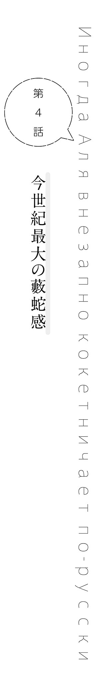

テスト期間。全ての中高生にとって苦行とも言える二週間が過ぎた、二学期中間試験明けの土曜日。
「
「う～ん、一般的なコースターとかなら大丈夫かな……なんか
「そうなんですね～！ あたしは結構怖がりなんで、そういうの平気な人って憧れちゃうなぁ」
「そう、なんだ。ハハハ……」
目的地に着いて早々に光瑠に張り付いているのは、
どうやら
もっとも、今回の名目はあくまで試験の打ち上げ兼バンドの打ち上げ（第二弾）だ。そこへ、部外者の玲亜を参加させたのには、当然思惑がある。玲亜と、そして
沙也加には、玲亜が光瑠に好意を抱いているため、それとなく協力して欲しいと伝えてある。そして、乃々亜は玲亜のサポートに回るとも。すると、自然と光瑠、乃々亜、玲亜の三人が固まって行動することになり、あとは政近とアリサがペアで行動すれば……
園内に入って早々に、政近たちは
「アリサさんは遊園地にはよく行くんですか？」
「いえ、実はこれが二回目で……」
「そうなんですか？」
「沙也加さんは？」
「わたしは割とこういったところが好きなので、年に四、五回は行きますね」
「そうなの？ それはちょっと意外ね」
「よく言われます」
自然とペアになった沙也加とアリサを見て、政近は心の中で叫ぶ。
（いや沙也加がアーリャから離れねぇ!!）
自然と、三人と四人とに分かれたところまではよかった。だが……沙也加がアリサに積極的に話し掛けるというのは、完全に誤算だった。
結果、先頭を行く顔面偏差値がヤバい三人組。その後に続くオシャレな美少女二人。最後尾をトボトボ付いて行く
「（おい毅、このままじゃアトラクションもこの組み合わせで乗る羽目になるぞ）」
隣の毅を横目に見て、政近は小声で懸念を伝える。すると、毅も前を向いたまま小声で応じた。
「（いや、でも沙也加さん楽しそうだし、邪魔するのも……沙也加さんが楽しそうなら、オレはそれで）」
「（もう失恋したみたいになってんじゃねぇか！）」
器用に小声で叫び、政近は先頭の光瑠を視線で指す。光瑠は、微妙に
「（見ろよ、光瑠だってお前のために頑張ってくれてるんだぞ？ お前は光瑠の献身を無駄にする気か？）」
「（美少女姉妹に挟まれるのが献身かぁ……）」
「（言いたいことは分かるが
「（……まずお前がアーリャさんに話し掛けてくんね？）」
「（お前……）」
完全にシャイな部分が出てしまっている毅に、政近は
無論、その頼みを実行することは難しくない。
アリサもまた、毅と沙也加の親交を深めるという裏の目的は共有しているため、政近が話し掛ければ積極的に協力してくれるだろう。だが……そうしたところで、毅がスムーズに沙也加と話せるとは思えなかった。
（まあでも、最初くらいは手助けしてやるか）
そう考え、政近がアリサに声を掛けようとしたところで、
「あ、皆さん！ よかったらあれに乗りませんか？」
先頭の玲亜がそう声を上げ、タイミングを外される。そして、玲亜が指差す方向を見れば、そこには軽快な音楽と共にくるくると回るコーヒーカップがあった。
「ここのコーヒーカップ、すっごく速く回るって有名なんですよ！ 乗ってみません？」
「へぇ～」
「コーヒーカップか……そう言えば小さい頃に乗ったっきりだな……」
特に誰も異論を
一個のコーヒーカップにつき定員が四名だったので、自然と宮前姉妹と光瑠、それ以外の四人で分かれることになった。
アリサと沙也加が並んで乗り、アリサの隣に政近、政近と沙也加の間に毅が座る。定員ギリギリなせいか、四人で座ると脚がぶつかりそうになった。毅も沙也加と脚がぶつかりそうになり、ヒュッと脚を引っ込める。
（いや、電車で百点の乗り方みたいになってんぞ）
脚をピッタリ揃え、ピシッと背筋を伸ばして座る毅に、政近は微苦笑を漏らした。そこでプルルルルッという音が鳴り、コーヒーカップがゆっくりと回り始める。
「っと、この真ん中のハンドルを回せばいいのか？」
試しに軽くハンドルを回すと、コーヒーカップの回転速度が少し上がった。
「おっ、速くなった。どうする？ もっと速く回してもいいか？」
「わたしは構いませんが」
「ええ」
「おぉ」
「よし、それじゃ──」
ハンドルを握る手に、ぐっと力を込めたところで、
「きゃぁ～～！」
すぐ近くで玲亜の黄色い声が聞こえ、とっさに声の方へ目を向ける。そして、戦慄した。
「きゃあ～～！ おねぇ速いぃ～！」
ぐるぐると高速で回転するコーヒーカップ。その遠心力に振り回された……かのように、光瑠にべったりと張り付く玲亜。
……いや、実際にそれなりの横Ｇは掛かっているのであろうが、他二人の体の傾き方を見れば、玲亜がかなり
（なんつー計算高さだ……これが本物の小悪魔女子……！）
そうして気付いた。ここで思いっ切りハンドルを回せば、こちらでも同じことが起こると。
（あれ？ これ本当に回してもいいのか？）
ささやかながらラッキースケベ的なイベントが発生すると分かっていて、なお突っ走るのは紳士的にどうなのか。だが、回していいのか
（うん、まあ多少のハプニングはあってもいいよな。遊園地だし）
二秒ほどでそう結論を出し、政近はグンッとハンドルを回した。そのまま立て続けにハンドルを回すと、コーヒーカップの回転速度はぐんぐん上がり、座面に押し付けられるようなＧと共に、振り回されるような横Ｇが体に掛かる。そして、ハンドルを
「きゃっ」
軽い悲鳴と共に、アリサが政近のふとももに手をつき、その感触に政近はビクッと体を跳ねさせる。
（うぉっ、なんだ!? なんか──）
女子にふとももを触られるという、あまり経験のない感触に、政近の背筋に妙な感覚が走り抜けた。
「あっごめ──！」
謝罪と共にその手はすぐに引っ込められたが、今度はアリサが体ごと肩に寄り掛かってくる。
二の腕同士が触れ合う感触と共に、ふわりと甘い香りが
政近の肩に寄り掛かるアリサ、アリサの肩に寄り掛かる沙也加、百点の座り方の毅。
（オイッ！）
コーヒーカップの縁を掴み、沙也加の方へ倒れ込まないよう全力で耐えている毅に、政近は心の中でツッコミを入れる。
（いや正しい！ 紳士的でいいと思うけども！ これだと逆に、なんか俺が居た
これではまるで……政近だけが、この状況を望んだかのようではないか。そう考えている内にゆるゆると回転速度は落ち、アリサと沙也加は姿勢を元に戻した。
【……スケベ】
（ちゃうねん……）
そして、離れ際にボソッとアリサが残したロシア語に、政近は嘆きの声を漏らすのだった。
◇
その後、それからいくつかのアトラクションを回って、昼食時。
手を洗いに行くという名目でトイレに向かった政近と光瑠は、毅を壁際に詰めていた。
「なあお前、やる気あるか？」
「……あります」
「声
いつもの陽気な姿はどこへやら、しょーんと
何しろこの午前中、毅は沙也加とろくすっぽ会話すら出来なかったのだ。いくらでもチャンスはあったし、周囲のお膳立てで沙也加とペアだって組ませてやったのに。
お化け屋敷では誰よりもビビり倒してて沙也加に心配されていたし、ジェットコースターではすんごい悲鳴を上げて沙也加を引かせていた。基本、心配しかされていない。
「僕がこう言うのも変な話だけどさぁ……もっと玲亜ちゃんみたいにグイグイ行きなよ」
「いや、男と女では話が違うだろ……？」
「ま、それはそう」
玲亜の場合は、もう見ていて感心してしまうほどに光瑠にゴリゴリとアタックしていた。お化け屋敷でもジェットコースターでも、「怖いので手を
一般的には、男子の場合は頼りになるところを見せるか、あるいは一緒に楽しむことで距離を縮めるかのどちらかだと思うのだが、今のところ毅はどちらも出来ていない。
「というか今更だけどさ。お前、遊園地向いてなくね？」
「！」
あまりアトラクション自体を楽しめてなさそうな毅に、政近は冷静にツッコむ。すると、毅は視線を
「いや、だって……みんな、楽しみにしてそうだったしさ……オレもみんなと一緒なら楽しめるかなって」
「……つまり、
「毅のそういうところは、本当にいいところだと思うんだけどね……」
（せめて、もう少し耐えてればな……こういうのって、上手いこと耐えて耐えて、最後の最後でギブアップして『え!? ホントは絶叫マシーン苦手だったの!?』ってなると好感度上がる気がするんだが……）
全然耐えられずに心配掛けているようでは、好感度も何もないだろう。しかも、毅自身も自分の情けなさにしょんぼりしてしまっている。これではいいところを見せるどころではない。
「……よし！ 苦手なところで勝負しても仕方ない！ 少しでも得意なところで勝負しよう！」
そう考え直し、政近は一計を案じた。そうして、昼食後に向かったのはサッカーボールで行うストラックアウトのコーナー。
「食後にいきなり絶叫マシーンだと気持ち悪くなっちゃうかもしれないし、ここでひとつ勝負をしないか？ ペアを組んで、どのペアが一番少ない球数で全部の的を打ち抜けるか」
政近の提案に、事前に根回しをしていた面々が頷き、沙也加と玲亜もそれならと
「あ、じゃあせっかくですし、一番ダメだったペアはあのフリーフォールに乗るってことにしませんかぁ？」
玲亜の提案で、予定外の罰ゲームが加わったが。
（ま、多少追い詰められた方が毅も頑張るだろ）
完全に他人事のつもりで、一番手に選ばれたアリサ乃々亜ペアを残してストラックアウトのコーナーから出ようとする政近。だが、フェンスの外に出る直前で、背後からアリサに
「あれ？ 政近君は？」
「え？ 俺はボールに嫌われてるからパスだけど」
「どういう理由よそれ」
最初から自分を勘定に入れていなかった政近は当然のようにそう返すが、そこへ玲亜が「えぇ～」と声を上げた。
「
「いや、別にそういうつもりじゃ……」
「ま、そうだね～。じゃ～くぜっちはアタシらのチームね」
「え～」
乃々亜にがっしと肩を掴んで引き戻され、政近はやむなくストラックアウトコーナーに
「おおっ」
その美しいシュートに、政近は目を見開く。勢いよく空を駆けるボールは、弧を描きながら真ん中の五番の的へと吸い込まれ──見事にフレームに弾かれて天井に跳ね返り、顔面に直撃した。……政近の。
「ガぇ」
鼻の奥で
「あれま」
「あっ、ご、ごめんなさい！ 政近君大丈夫!?」
アリサに心配そうな声を掛けられ、政近は痛みと涙をこらえて立ち上がると、なんてことない顔をしてアリサと乃々亜に言う。
「な？」
その鼻からつぅっと鼻血が垂れ、アリサと乃々亜は同時に顔を背けた。
◇
「本当に、ごめんなさい……」
「いや、まあ俺がボールに嫌われてるのは前からだから、謝ることはないよ……」
一球目で早々に負傷退場した政近は、アリサと共にストラックアウトコーナーから少し離れたベンチに腰掛け、上を向いて鼻を押さえていた。
「いえ、それもそうなんだけど……その、笑ってしまって……」
「……まあ、気にするな。両方の鼻の穴から同時に鼻血が垂れたら、俺だって笑う」
むしろ、吹き出さずに肩を震わせるに
「んぁ？」
政近が上を向いたまま視線だけそちらに向けると、アリサが自分のふとももを手で
「ほら……来て？ 冷やすから」
「え？」
「さっき買った飲み物がまだ冷たいから、これで冷やしてあげる」
「えっと、それは……俗に言う膝枕、というやつでしょうか？」
「……わざわざ言葉にしないでよ」
「いやぁ、こんな公衆の面前でそれは私も恥ずかしいというかですね」
「これはただの医療行為よ」
「便利な言葉だな医療行為」
「も、もう、ほら、いいから」
「お、おぅ？」
グイッと強引に引き寄せられ、不意を
（アカン、ここで鼻血出すのはなんか変な意味が生まれるっていうかアーリャの服が汚れる）
いろんな意味で危機感に衝き動かされ、政近はとっさに体をよじってアリサの脚の上で
すると、左耳がアリサの下腹部に当たり、視野の左半分が大きな山脈に遮られた。
（……わぁ）
なかなかに衝撃的な光景に、知性ゼロな声を脳内で上げたところで、その山脈の向こうから困惑半分羞恥半分のアリサの声が降ってくる。
「あの、もう少し膝側に移動してくれる？」
「ハイ」
言われるがままにずりずりっとお山の陰から移動すると、タオルを巻いたペットボトルが顔に押し当てられた。
そのひんやりとした感触が思ったより心地よく、政近は目を細める。自分でも気付いていなかったが、どうやらボールのぶつかった箇所がじんじんと熱を持っていたらしい。
「……どう？」
「ああ、うん。気持ちいいよ」
無意識にそう答えてから、政近はハタとこの状況で「気持ちいい」と言うのも、これまた何か意味が生まれるのではないかと気付く。
（あ、いや、まあ膝枕が気持ちいいのはたしかにそうなんだけど、今のはそういう意味じゃ……）
脳内で言い訳じみた言葉を並べるが、実際に口にしたら
「……なあ、恥ずかしいんなら──」
「別にっ、大丈夫よ……」
ペットボトルで視界が塞がれている政近はともかく、周囲の視線をはっきり認識できてしまうアリサはさぞ恥ずかしいだろう。そう思って声を掛けるも、即座に否定が返ってくる。おまけに、政近が体を起こそうとすると、肩を押さえて阻止してくるのだ。これには政近も観念して、アリサに身を任せるしかなかった。
「……そう言えば、体調はもう大丈夫なの？」
しばしの沈黙の後、投げられた問い掛けに政近は内心首を傾げる。
「何の話？」
「ほら……テスト前に、なんだか少し具合が悪そうだったじゃない」
「あぁ……」
とっさにそう答えてから、政近はしまったと思った。バレないようにしていたのに、今の答えでは白状したも同然ではないかと。
「やっぱり、具合悪かったのね」
「あ～……ま、ちょっとな」
これ以上隠しても無意味だと悟り、政近はアリサの言葉を認める。
実のところ、政近はテスト前に少し体調を崩していた。
しかし、その原因というのは……風呂でのぼせた
「ちょっと、頭痛がしてただけだよ……よく気付いたな」
「気付くわよ」
当然と言わんばかりの口調でそう答えてから、アリサはボソッと付け足した。
【ずっと、見てるもの】
（ぐフッ）
ずいぶんと久しぶりの
「ま、ちょっと油断してな……今はもう完全に治ってるから心配しなくていいよ」
「そう」
「ただ、その……悪い。言い訳でしかないけど、今回も三十位以内は少し厳しいかもしれない……」
「別に、いいわよ」
政近の謝罪に、アリサは素っ気なくそう返すと、軽く政近の頭を
「政近君は……いつも、私のパートナーとして頑張ってくれてるもの。試験の成績くらい、大したことじゃないわ」
「そう、か……？」
顔を突き合わせていないからだろうか。なんだかいつもより素直で優しげなアリサの言葉に、政近は少し戸惑いながらも、心が安らぐのを感じた。
「ありがとな、アーリャ」
「……」
政近もまた素直に感謝を告げ、しばし穏やかな沈黙が続き……

「あの、政近く──」
アリサがどこか意を決したように声を上げたタイミングで、乃々亜の声が聞こえてきた。
「あれれ、くぜっちどしたん」
「「！」」
その声に二人は同時にビクッとなり、政近はとっさに顔の上のペットボトルをどけると、バッと起き上がった。そして、半眼でこちらを見つめる乃々亜と、ついでに遠巻きにこちらをチラチラ見ている通行人を見て、気持ち大声で説明する。
「いや、ボールが当たったところを冷やしてもらってただけ！ な？」
アリサの方を向いて同意を求めると、アリサはまたしてもビクッと体を跳ねさせ、しどろもどろに
「そ、そう……あの、私新しいペットボトル買ってくるわね？ これはもうぬるくなっちゃったし……」
「え？ あ、や、別にもう冷やさなくていいぞ～？」
政近の呼び掛けも聞かず、アリサは慌ただしく立ち上がるとそそくさとどこかへ行ってしまう。その背をなんとも言えない表情で見送っていると、「ん～」と首を傾げた乃々亜が、政近の方を向いて言った。
「なんか、邪魔しちゃった？」
「いや、別にそんなことはないが……ストラックアウトの方は終わったのか？」
サラッと話を変えると、乃々亜は気だるそうな顔のままピースをふりふりと振る。
「一人で、アリッサの分も入れて十四球でクリア」
「えっ、的中率約七割？ マジかよスゲーな」
「ま～ね～、球技は割と得意だし」
淡々とそう言うと、乃々亜はアリサが座っていた場所に腰掛けた。
「？ 向こうの様子は見なくていいのか？」
「あ～今ヒカルンと玲亜の番だから。アタシがいたら、さやっちアタシとしゃべるっしょ？ したら、タケスィーの邪魔になるかなって」
サラッとそんなことを言う乃々亜に、政近は意外感と共に眉根を寄せた。そして、一旦周囲を確認してから、どこかのタイミングで
「お前はさ、それでいいのか？」
「何が～？」
「仮に、毅と沙也加がうまくいって……二人が恋人になっても」
政近の言葉に、乃々亜は特に表情を変えなかった。それでも、政近はなおも乃々亜の顔を注視したまま、慎重に言葉を紡ぐ。
「俺は正直……沙也加に恋人が出来ることを、お前は喜ばないんじゃないかと思ってたんだけどな」
「もっとはっきり言えば～？ 邪魔するんじゃないかと思ってた、ってさ」
「……そうだな」
あえて否定はせずに、政近はじっと乃々亜を見つめる。すると、乃々亜は変わらず無表情のまま、軽く肩を
「別に、邪魔する気はないよ。いいんじゃない？ それでさやっちが幸せなら」
「そうなのか？」
「うん、さやっちが幸せならたぶんアタシも幸せだし」
その、いっそ献身的とすら言える言葉に、政近は思わず絶句する。真顔で
「そ～んな露骨な反応するぅ～？」
「……いや、すまん。まさかお前からそんな
「あはぁ、くぜっちも大概正直だよね～」
「気分を害したなら謝るが？」
「害してないって分かって言ってるっしょそれぇ～」
語尾にだけわざとらしく不満げなニュアンスを乗せ、乃々亜は宙に視線を向ける。そして、虚空を見つめたまま唐突に脈絡のないことを言った。
「グラスハープ？ だっけ？ グラスに水を入れて、音を出すやつあるじゃん？」
「？ ああ」
「あれさぁ、同じ形のグラスに、同じ量の水を入れておくと共鳴するんだよね～」
「……何の話？」
流石に話が飛び過ぎていて意図が読めず、政近は首を傾げる。そんな政近を見るでもなく、乃々亜は淡々と続けた。
「たぶんアタシのグラスはさ。とんでもなく分厚くて、すっごくいびつな形をしてるんだよ」
「！」
そこでようやく乃々亜の言いたいことが分かり、政近は目を見開く。
「周りのグラスがどれだけ震えようが、アタシのグラスはビクともしない。これでもいろいろ試したんだけどね？ でもダメだったんだぁ……どんだけグラスに衝撃を加えても……すぐ目の前で他のグラスが砕け散ったって、アタシの水面が波打つことはなかった。さやっちにビンタされるまではね？」
当時のことを回想しているのか、乃々亜はうっすらと笑った。そして、驚くほどに優しい声で語る。
「さやっちは、アタシの水面を揺らせる人なんだよ。アタシのいびつなグラスも、さやっちのグラスとだけは少しだけ共鳴が出来る。だから……さやっちが幸せになれば、アタシも幸せになれるんだよ。きっと」
それは、ある種の告白の様だった。どこか冒しがたい神聖さすら感じさせる乃々亜の言葉に、政近は息を
しかし……その上でなお、政近は親友の恋路を応援する者としてもう一歩踏み込んだ。
「そのためなら、沙也加に……お前以上に大切な人が出来て、お前と一緒に過ごす時間が減っても、構わないのか？」
「んん～？ そうだねぇ……」
政近の
「その時は……アタシにも、寂しさってやつが理解できるのかもね」
いっそ楽しそうにすら見えるその姿。その、横顔に……政近は、人と同じように喜び、悲しむことの出来ない乃々亜の苦悩を見た。
それは、ただの錯覚だったのかもしれない。この少女にも、そのくらいの人間らしさがあって欲しいという、政近の願望がそう見せただけなのかもしれない。でも……
「……」
足元の地面に視線を移し、ガリガリと頭を
「……まあ、話くらいなら聞くぞ？」
ぶっきらぼうにそう言って数秒待つも、返事はなく。チラリと視線を横に向ければ、意外そうに目を見開いた乃々亜と目が合って、政近はすぐにそっぽを向いた。
「お前のことを放置して……毅にトラウマを植え付けられるようなことがあっても困るからな」
自分でも下手な照れ隠しだと思いながら、反対の方を見ていると……不意に、すぐ横に気配を感じた。直後、右腕にするりと腕が巻き付き、ぎょっとして振り返る。すると、息が掛かりそうな距離に
目の前には、芸能界でもなかなか見ないレベルの美少女の顔。右腕はしっかりとその美少女に
（な、なんだ？ ヤバイ、
とびっきりの美少女に腕を抱かれているというのに、気分はさながら猛獣に組み付かれた小市民だった。体が熱くなるどころか、スーッと冷たくなっていく。そのくせ背中の汗がすごい。
「いい……うん、いいね」
「ねぇくぜっち、試しにアタシのこと殴ってみてくれない？ もしかしたら、揺れるかも」
「なんでだよ!?」
突然のアブノーマルな要求に、政近は半ば悲鳴のような声を上げる。そして、その意図を理解して戦慄した。
「オイ待て。勘弁してくれ。俺はお前の執着を受け止める自信はない」
「いいの？ 殴らないならこのままキスするけど」
「ちょっ、おまっ、マジでやめろ！」
とっさに左手で口元をガードするが、乃々亜の妖しい笑みは止まらず、政近の心臓を強烈な危機感が貫いて──
「なに、してるの？」
耳に届いたアリサの声に、縮み上がっていた心臓が跳ね上がった。振り向けば、そこにはペットボトル入りのジュースを手に
「ん？ 今ちょぉっとくぜっちを口説いてるとこ、かな」
「く、くど……!?」
「別にいいっしょ？ くぜっちフリーだし」
「……っ、……」
何かを言おうとして、アリサは言葉を
（いや……思わず固まっちまったが、これ俺がキッパリ断れば済む話だよな？）
頭の中に、今まで読んだ数々のラブコメ作品の修羅場シーンが
（そう……こういった時に修羅場になるのは、男が煮え切らない態度を取るからだ。男がはっきりノーを突きつければ、それで終わる話なんだ）
そう考え、政近は軽く息を吐いてから乃々亜に向き直る。
「乃々亜」
「うん？」
「悪いが、俺はお前を恋愛対象として見ることはまず無理だ。あえてはっきり言わせてもらうが、お前に異性としての魅力は全く感じないんでな」
「そっか、でもそれってアタシがくぜっちを口説かない理由にはならないよね」
「そっか、理由にならないかこれ」
終わらなかった。修羅場続行。
（こいつマジで強いよ……なんなのこいつ、無敵じゃん）
本気でどうしたものかと考え、政近は思い付くままに言葉を連ねる。
「乃々亜、一旦冷静になれ。今回の目的は毅と沙也加、それと光瑠と玲亜さんを仲良くさせることだろ？ 俺達が変な感じになったら、それどころじゃなくなっちゃうだろ。特に沙也加と玲亜さんが」
沙也加の名前を出せば止まるんじゃないかという、ただそれだけの苦し紛れの説得だったが、意外にも乃々亜は動きを止めた。そうして、ゆっくりと
「そう、だね……約束したし」
そして誰にともなくそう
「ありがとな、わざわざ買って来てくれて。でも、もう鼻血止まったから……」
「あ、うん……」
「いや、気持ちは
「ううん、そんなのは別にいいけど……」
「いや、こういうのは大事だから」
「元々は、私がボールを当てちゃったからだし……」
「それはさっきの膝枕でチャラだから」
とっさにそう言うと、アリサは少し眉根を寄せてむっとした顔になった。その顔で失言に気付き、政近は言葉に詰まる。
「もうっ、馬鹿」
フンッと鼻を鳴らすと、アリサはペットボトルを政近に押し付けて
「……ほら、みんなのところに行きましょ」
「あ、ああ、そうだな」
「りょ～」
アリサに促され、政近たちは微妙に気まずい雰囲気のまま、他の四人と合流すべくストラックアウトのコーナーへと向かう。すると、
「光瑠さんすごいですぅ～。サッカーも上手いんですねぇ～？」
「あはは、ありがとう……」
「ごめん沙也加さん、今日なんか調子悪かった……」
「わたしも全然当てられませんでしたし、謝る必要はないですよ」
そこには光瑠の腕に張り付く玲亜と、肩を落として沙也加に謝る毅がいた。その光景を見て、政近は心の中で力いっぱい叫ぶ。
（負けてんじゃねぇか!!）
そうして、敗者たる毅と沙也加はフリーフォール送りとなり──毅は死んだ。
◇
「まったく……そうなると分かっていたのなら、断ればよかったでしょう。いくら罰ゲームとはいえ」
ベンチでぐったりと頭を垂れる毅に、沙也加は
フリーフォールで完全に魂が抜けてしまった毅が復活するのを待つ間、他の面々は近くにあった観覧車に乗っている。そこで、毅の付き添いでこの場に残った沙也加は、この際ずっと思っていたことを言うことにした。
「そもそも……絶叫マシーンが苦手なら、そう言ってくれればよかったではないですか。別に、遊ぶ場所なんて遊園地以外にもいくらでもあるんですから」
「……いやぁ、みんな楽しみにしてるみたいだったし、オレも、高校生になったことだしイケるかなぁと、思ったんですけどね」
のそっと顔を上げ、力なく笑う毅に、沙也加は
「まったく、いつも周りの人を優先して……損な性格ですね」
「……それは、沙也加さんも一緒じゃないっすか？」
「？」
完全に予想外の言葉を返され、沙也加は眉をひそめる。すると、ゆっくりと体を起こした毅が、沙也加を真っ直ぐに見て言った。
「いつも、周りの人をまとめること優先で……全然我を出さないじゃないっすか、沙也加さん」
思い掛けない言葉に、沙也加は目を見張る。
そうして、毅の視線から目を
「……そうした方が、人をまとめる上で便利だからですよ。私情で周囲を操ろうとする人間を、人は信用しませんから」
沙也加にとって、人を動かすものとは理と利だ。合理と、利益。その二つを突き詰めることで、沙也加は集団においてリーダーシップを発揮してきた。
感情なんていう、合理と相反するものは必要ない。考慮はするが、重視はしない。誰に冷たいと言われようと、沙也加はそのスタイルを変えるつもりはなかった。
（まあ、そうした結果、心で人を動かしたアリサさんに負けたわけですから……とんだ
内心軽く自嘲し、皮肉っぽく笑う沙也加。その耳に、思い掛けない言葉が届く。
「すげぇなぁ……」
心から感心した風なその声に、沙也加が眉根を寄せて振り向くと、毅は慌てた様子で弁明した。
「いや、その……！ そんな風に自分のことを徹底的に抑えて、周りの和を大切にするなんて……普通は出来ないと思うんで。だからその、すごいなぁっていうか。沙也加さんは、優しいなぁと、思って……」
「……」
恥ずかしそうに
「……そんなことは、初めて言われました」
思い返してみれば、周囲の人間に言われた性格に関する評価など、「冷たい」とか「面白みがない」とかそんなことばかり。能力を褒められたことはあれど、性格を褒められた経験などほとんどない。
だからこそ、沙也加にとって毅の言葉は新鮮で、目が覚めるような衝撃を受けた。そこへ、毅は遠慮がちに続ける。
「学園祭でも、メイド喫茶なんていう沙也加さんからしたら不服そうな企画でも、嫌な顔せず一生懸命やってて……すごいなって」
「……」
毅の言葉に、沙也加は無言で
そんな沙也加の内心に気付くこともなく、毅は一度唾を呑み込んでから言う。
「でも、オレ達はその、友達なわけで……こういうメンバーでいる時くらい、もう少し我を出すっていうか、エゴ？ そんなもんを出してもいいんじゃないかなぁって、思うわけですよ……」
「エゴ、ですか……」
「そ、そうそう、沙也加さんのやりたいこととか？ もっと積極的にアピールしてもいいっていうか、ほら、今なんてオレしかいないし？ 沙也加さんがやりたいことに付き合うよ？ みたいな」
ちょっとおどけながら早口にそんなことを言う毅に、沙也加は小さく笑う。そして、珍しく微笑みを浮かべたまま、ベンチから立ち上がって毅に言った。
「それじゃあ、付き合ってもらいましょうか？ せっかくですし」
「あ、お、おう！ 任せろ～い」
沙也加の微笑みに数秒固まってから、毅は立ち上がる。そうして、二人はいつもよりもだいぶ打ち解けた雰囲気で、並んで歩き始めた。
◇
「あれ？ あそこ一緒に歩いてるの……毅と沙也加じゃないか？」
観覧車の窓から下を
「へぇ、心配してたけど……なんだかんだうまくいってるのかな」
「……」
わずかな意外感と共に安心したようにそう言う政近を、アリサはじっと見つめる。脳裏に蘇るのは、光瑠にアタックを掛ける玲亜と、先程政近の腕に抱き着いていた乃々亜の姿。
（そんなにいいものなのかしら、恋愛って）
馬鹿にするでもなく、
今までも、周りに恋愛している人がいないわけじゃなかった。
それでも、アリサが恋愛に興味を持つことはなかった。けれど、こうして友人達までもが恋し恋されている光景を見ると……なんだか自分だけが、一人取り残されているような気分になってしまう。
（何を考えてるのよ……自分は自分、他人は他人でしょ？ 恋愛なんて、焦ってするようなものじゃないわ）
そもそもアリサは今まで、恋愛自体をしようと思ったことがなかった。
自分が誰かに心奪われるようなことがあるとは思えなかったし、恋人なんてものが必要とも思えなかったから。
（でも……）
ずっと一人でいいと思っていた自分が、今はこうして友人達と一緒に遊んでいる。そして、それを素直に楽しいと感じている。なら……恋愛というものも、アリサが思う以上に素敵なものなのかもしれない。
（私にも……知ることが出来るのかしら。恋、ってものを）
叶うならば、知りたい。それがそんなにも、素晴らしいものであるならば。
こんな風に考えてしまうのはきっと……乃々亜に言い寄られる、政近の姿を見てしまったからだろう。
毅と沙也加、光瑠と玲亜、政近と乃々亜。この全員がもしうまくいった場合、アリサは一人になってしまう。そう思ったからこそ、どうしようもなく焦燥感を抱いている。
（政近君は、乃々亜さんをきっぱり振っていたけれど……）
だがそれは……政近にもいるからだ。強く、恋い慕う相手が。
そのことを、アリサは秋嶺祭で、政近が弾いたピアノを聴いて思い知った。
（あ──）
不意に、友人達を見下ろす政近の横顔に、その時の政近の表情が重なった。
優しくて、悲しくて……胸が締め付けられそうなその表情に、アリサは思わず身を乗り出して──
「おっ、と!?」
「！」
ゴンドラがぐらっと揺れ、アリサは我に返る。そして、乗り出しかけた体を椅子に戻した。
「おいおい、急にやめてくれよ……ビックリするじゃんか」
困ったような半笑いでそう言う政近を見て、アリサは数拍置いてから、いつものように
「……あら、このくらいで驚いてるの？ えいっ」
「うわっ」
グンッと後ろに体重を掛けてゴンドラを揺らすと、政近は両腕両脚を伸ばしてバランスを取った。その様子がおかしくて、アリサはまたゴンドラを揺らす。
「ちょっ、やめっ、危ないって！」
「ふふっ、あははっ」
そうして、ゴンドラが地上に戻るまで。子供のような……どこか空元気のような、アリサの悪戯は続くのだった。
◇
「さって、あの二人どこに行ったのかな……」
「特にスマホには連絡来てないね」
「こっちも～」
「ってことは、そんな遠くには行ってないと思うんだが……」
観覧車から降りた五人は、どこかへ行ってしまった毅と沙也加を捜して園内を歩いていた。もし万一いい雰囲気になっていた時のことを考えて、あえて電話は掛けず、足で二人を捜す。そうして、政近が観覧車から目撃した方向に歩くこと数分。
「あ、いた」
二人を見付けたのは……フードコートの端にズラッと並んでいる、ガチャガチャのコーナーだった。
「次はピンク……？ いえ、これは緑……う～ん、あと二回、いや三回……」
ガチャガチャの側面に張り付き、中を
（……てぇっ！）
しかしすぐに我を取り戻すと、慌てて毅の下へ駆け寄った。
「お、おい、毅、これは……」
想い人の隠された一面を見てしまった親友に、政近は言葉に迷いながらその顔を覗き込み──
「ああ、見てくれよ政近……沙也加さん、すっげぇ楽しそう」
「……お前偉いよ。マジで」
どこか透き通った笑顔で沙也加を見つめる毅に、政近は心からの敬意を込めて、その肩に手を置いた。